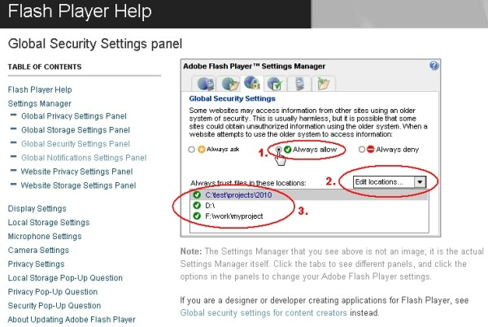

| Installing PowerCharts XT |
|
Installation of PowerCharts XT merely involves copying and pasting the SWF files and the JavaScript files from the package into any of your folders. |
| Installing PowerCharts XT for your web application |
|
Installation of PowerCharts XT for your web application is just a two-step affair:
Installation Complete. There's no more step involved. You're now ready to use PowerCharts XT in your web application. If you are already using FusionCharts XT in your web application, you can safely replace your existing FusionCharts.js and other JavaScript files with the latest files which you have received in PowerCharts XT pack. |
| Installing PowerCharts XT on your local machine for general charting |
If you want to create charts on your local machine, follow the steps below:
If you are already using FusionCharts XT in your web application, you can safely replace your existing FusionCharts.js and other JavaScript files with the latest files which you have received in PowerCharts XT pack. You can manipulate the settings from Adobe Flash Player Settings Manager in the Global Security Settings panel. It can be done in four simple steps:
 In case you wish to do this settings offline, you can ease this process by running a script file from the folder where you have kept the chart SWF files. Go to How to setup Flash Player Global Security Settings? page. That completes the installation for PowerCharts XT. Now, all you need to do is build your XML or JSON data and HTML page, which we'll see in the next section. |